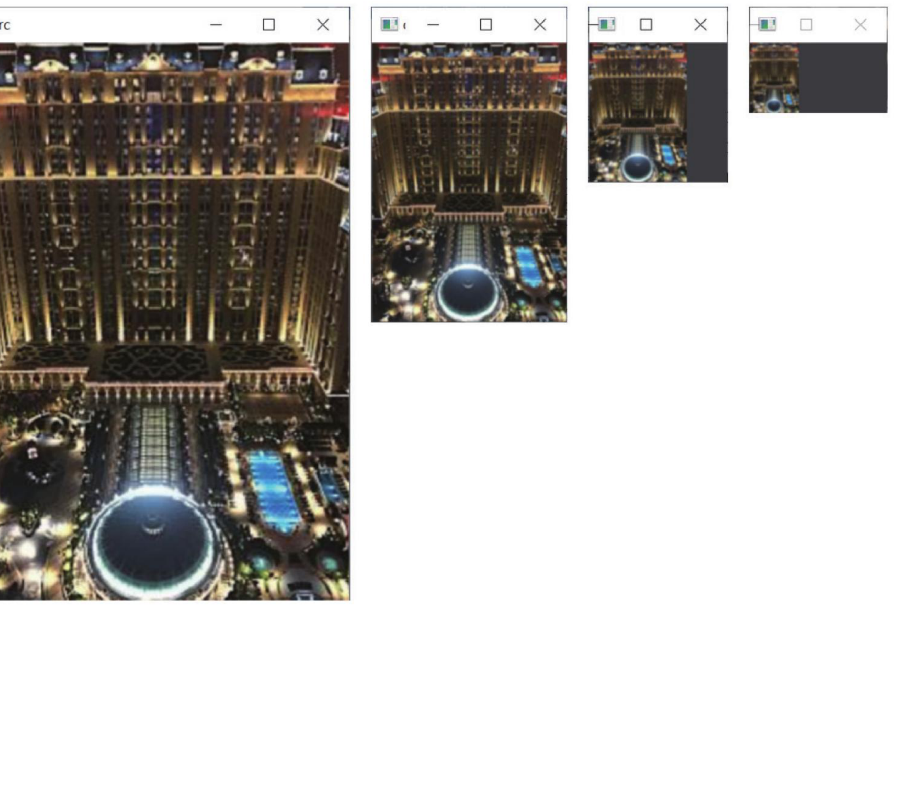
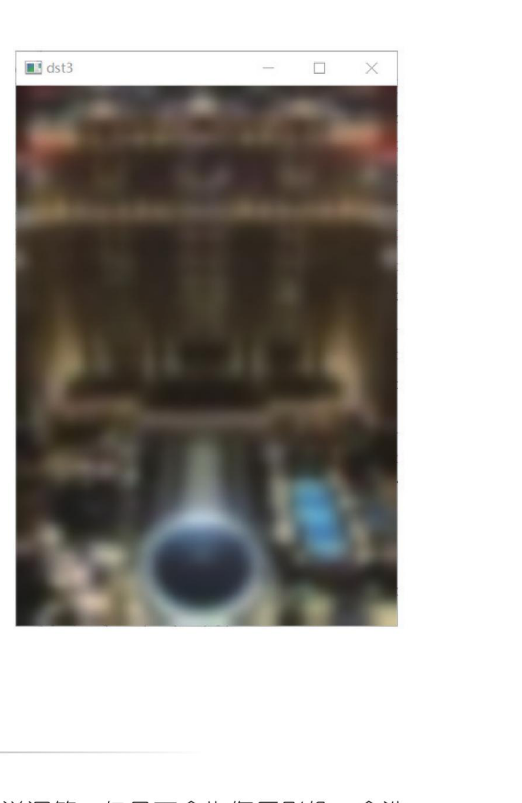
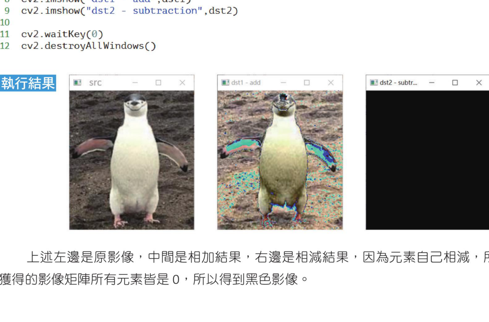
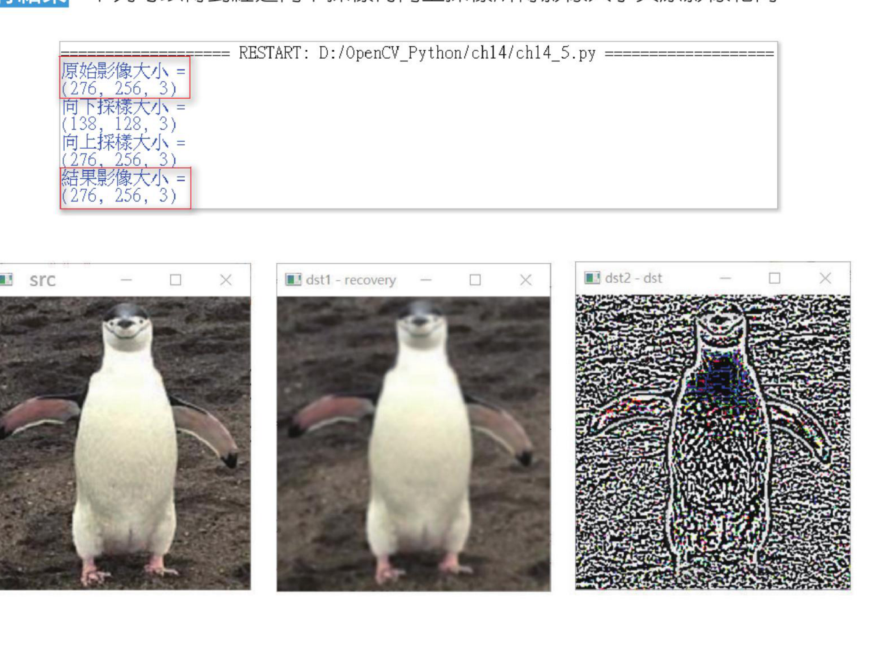
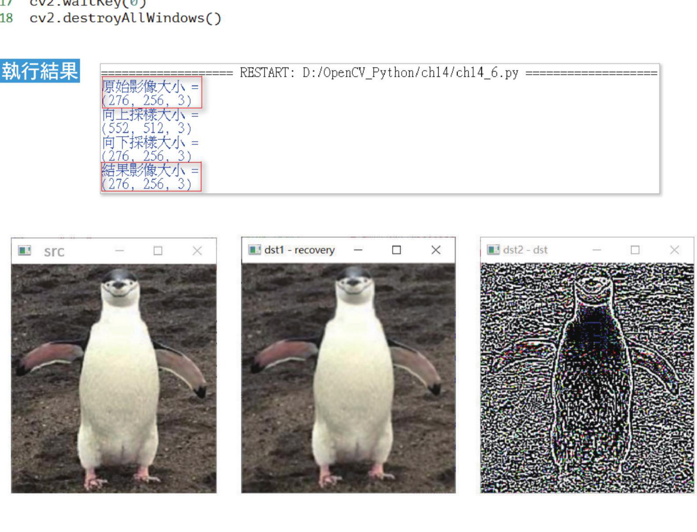
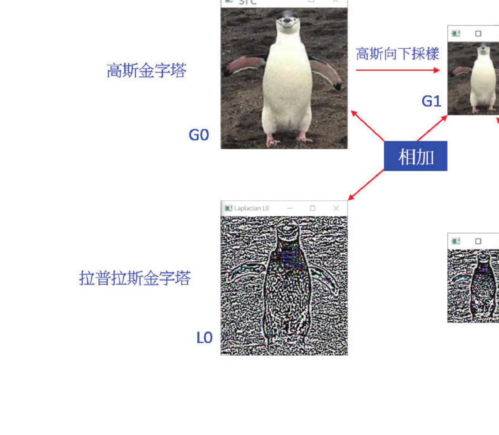
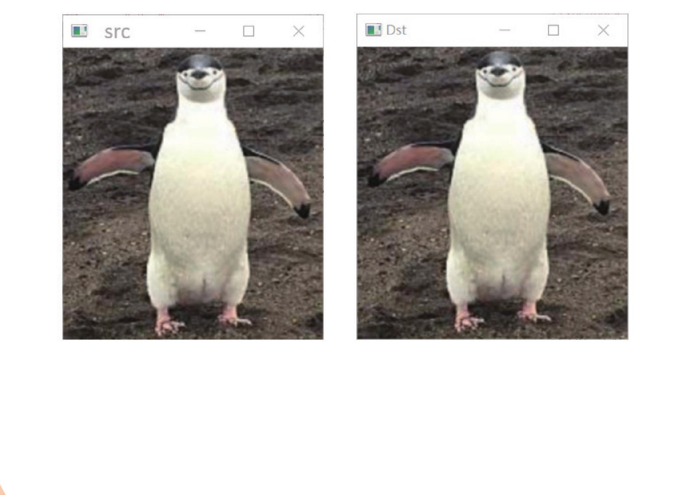
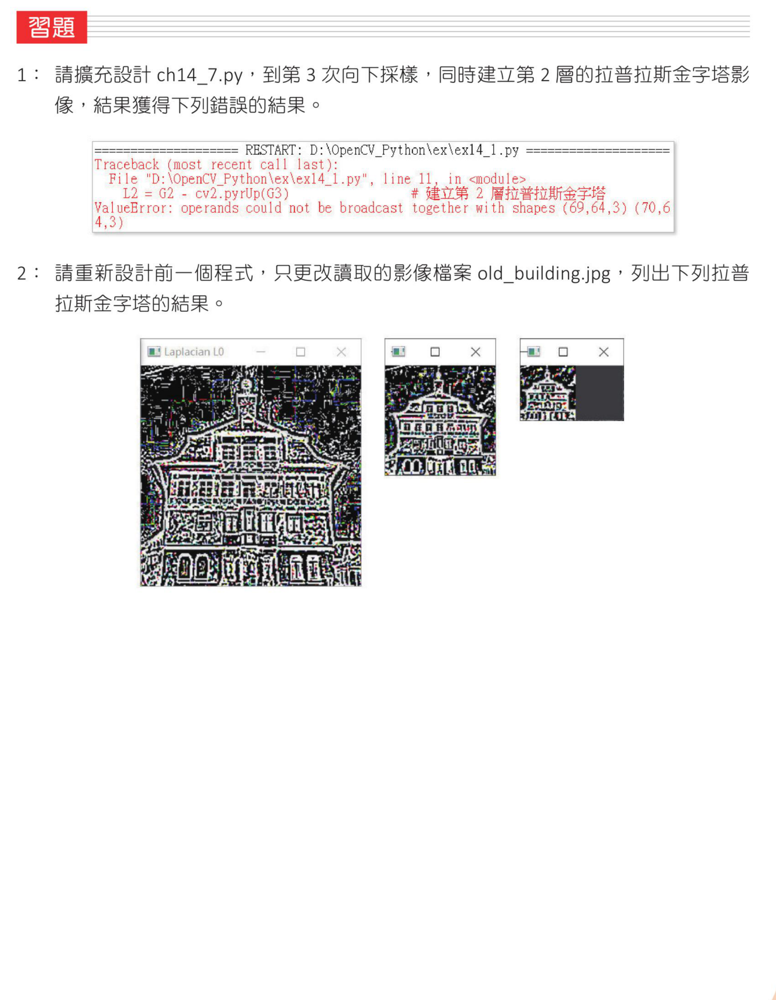

第 14 章
影像金字塔
本章共 5 个小节 · 影像金字塔原理 · pyrDown · pyrUp · 采样逆运算 · 拉普拉斯金字塔
影像金字塔是同一张影像在不同解析度下形成的层级结构。越往上层，影像尺寸越小、解析度越低；
越往底层，影像越接近原始尺寸。OpenCV 将常用的向下采样与向上采样封装为 pyrDown()
和 pyrUp()，并可进一步建立高斯金字塔与拉普拉斯金字塔。
14-1
影像金字塔的原理
影像金字塔可以视为同一影像经过多次采样后得到的一组影像。最底层通常是原始影像，称为第 0 层；
第 1 层是对第 0 层向下采样后的结果，第 2 层再由第 1 层向下采样得到。若每次列数与行数都约减半，
影像面积约为上一层的四分之一。
直接删除偶数列与偶数行虽然可以缩小影像，但容易造成细节遗失与失真。实际建立金字塔时通常会先用滤波器平滑影像，
再取样保留部分像素。常见滤波器包括均值滤波器和高斯滤波器，其中高斯滤波器是建立影像金字塔最常用的方法。
观念
向下采样会丢失高频细节；向上采样虽然能放大尺寸，但不能把已经丢失的细节完整找回。
高斯金字塔的向下采样流程通常分成两步：先用高斯滤波器平滑影像，再删除偶数列与偶数行。OpenCV 使用的 5x5
高斯核可写成下列形式：
1 / 256 *
[[ 1, 4, 6, 4, 1],
[ 4, 16, 24, 16, 4],
[ 6, 24, 36, 24, 6],
[ 4, 16, 24, 16, 4],
[ 1, 4, 6, 4, 1]]
向上采样则反过来处理。它会先在原影像像素之间插入新的列与行，再用滤波器进行插值和平滑，因此放大后的影像通常会比原始高解析度影像模糊。
14-2
OpenCV 的 pyrDown() 函数
pyrDown() 会先对来源影像进行高斯滤波，再向下采样。默认输出尺寸约为来源影像宽高的一半。
dst = cv2.pyrDown(src, dstsize, borderType)
| 参数 | 说明 |
|---|
dst | 返回结果影像，也称目标影像。 |
src | 来源影像，也称原始影像。 |
dstsize | 可选参数，目标影像大小。默认大小为 ((src.cols+1)/2, (src.rows+1)/2)。 |
borderType | 可选参数，边界值处理方式，通常使用默认值 BORDER_DEFAULT。 |
程序实例 ch14_1.py：使用 macau.jpg 连续执行 3 次向下采样
# ch14_1.py
import cv2
src = cv2.imread("macau.jpg")
dst1 = cv2.pyrDown(src)
dst2 = cv2.pyrDown(dst1)
dst3 = cv2.pyrDown(dst2)
print(f"src.shape = {src.shape}")
print(f"dst1.shape = {dst1.shape}")
print(f"dst2.shape = {dst2.shape}")
print(f"dst3.shape = {dst3.shape}")
cv2.imshow("src", src)
cv2.imshow("dst1", dst1)
cv2.imshow("dst2", dst2)
cv2.imshow("dst3", dst3)
cv2.waitKey(0)
cv2.destroyAllWindows()
src.shape = (487, 339, 3)
dst1.shape = (244, 170, 3)
dst2.shape = (122, 85, 3)
dst3.shape = (61, 43, 3)

连续 3 次向下采样后，影像宽高逐层缩小，参考原书第 14-6 页。
14-3
OpenCV 的 pyrUp() 函数
pyrUp() 是向上采样函数。它会将影像放大，默认输出大小为来源影像宽高的 2 倍。
向上采样不是简单复制像素，而是通过插值和平滑得到新影像。
dst = cv2.pyrUp(src, dstsize, borderType)
| 参数 | 说明 |
|---|
dst | 返回结果影像，也称目标影像。 |
src | 来源影像，也称原始影像。 |
dstsize | 可选参数，目标影像大小。默认大小为 (src.cols*2, src.rows*2)。 |
borderType | 可选参数，边界值处理方式，通常使用默认值 BORDER_DEFAULT。 |
程序实例 ch14_2.py：使用 macau_small.jpg 连续执行 3 次向上采样
# ch14_2.py
import cv2
src = cv2.imread("macau_small.jpg")
dst1 = cv2.pyrUp(src)
dst2 = cv2.pyrUp(dst1)
dst3 = cv2.pyrUp(dst2)
print(f"src.shape = {src.shape}")
print(f"dst1.shape = {dst1.shape}")
print(f"dst2.shape = {dst2.shape}")
print(f"dst3.shape = {dst3.shape}")
cv2.imshow("src", src)
cv2.imshow("dst1", dst1)
cv2.imshow("dst2", dst2)
cv2.imshow("dst3", dst3)
cv2.waitKey(0)
cv2.destroyAllWindows()
src.shape = (61, 43, 3)
dst1.shape = (122, 86, 3)
dst2.shape = (244, 172, 3)
dst3.shape = (488, 344, 3)

由小图连续放大后，尺寸变大但细节不会恢复成原来的高解析度影像，参考原书第 14-7 页。
14-4
采样逆运算的实验
为了观察向下采样与向上采样是否能互相还原，本节先说明影像相加与相减，再用同一张影像进行「先缩小再放大」、
「先放大再缩小」两组实验。
14-4-1 影像相加与相减
影像本质上是矩阵，矩阵中每个像素值可进行数值运算。若使用 uint8 数组直接相加，超过 255 的结果会按 256 取余；
例如 216 + 59 = 275，在 uint8 中会得到 19。
程序实例 ch14_3.py：随机矩阵相加
# ch14_3.py
import numpy as np
src1 = np.random.randint(256, size=(2, 3), dtype=np.uint8)
src2 = np.random.randint(256, size=(2, 3), dtype=np.uint8)
dst = src1 + src2
print(f"src1 =\n{src1}")
print(f"src2 =\n{src2}")
print(f"dst =\n{dst}")
说明
ch14_3.py 使用随机数，每次执行得到的矩阵不同。重点是观察 uint8 数值范围与溢出后的结果。
程序实例 ch14_4.py：影像相加与相减
# ch14_4.py
import cv2
src = cv2.imread("pengiun.jpg")
dst1 = src + src
dst2 = src - src
cv2.imshow("src", src)
cv2.imshow("dst1 - add", dst1)
cv2.imshow("dst2 - subtraction", dst2)
cv2.waitKey(0)
cv2.destroyAllWindows()

左边是原影像，中间是相加结果，右边是相减结果；自己相减会得到全黑影像，参考原书第 14-9 页。
14-4-2 反向运算的结果观察
若影像先经过向下采样再向上采样，尺寸可以回到原大小，但中间已经丢失细节，因此恢复影像与原影像不会完全相同。
程序实例 ch14_5.py：先向下采样再向上采样
# ch14_5.py
import cv2
src = cv2.imread("pengiun.jpg")
print(f"原始影像大小 = \n{src.shape}")
dst_down = cv2.pyrDown(src)
print(f"向下采样大小 = \n{dst_down.shape}")
dst_up = cv2.pyrUp(dst_down)
print(f"向上采样大小 = \n{dst_up.shape}")
dst = dst_up - src
print(f"结果影像大小 = \n{dst.shape}")
cv2.imshow("src", src)
cv2.imshow("dst1 - recovery", dst_up)
cv2.imshow("dst2 - dst", dst)
cv2.waitKey(0)
cv2.destroyAllWindows()
原始影像大小 =
(276, 256, 3)
向下采样大小 =
(138, 128, 3)
向上采样大小 =
(276, 256, 3)
结果影像大小 =
(276, 256, 3)

恢复影像比原影像模糊，差值影像显示两者不相同，参考原书第 14-10 页。
另一组实验是先向上采样再向下采样。虽然最后尺寸与原影像相同，但因为放大与缩小过程中经过滤波处理，结果仍会与原影像有差异。
程序实例 ch14_6.py：先向上采样再向下采样
# ch14_6.py
import cv2
src = cv2.imread("pengiun.jpg")
print(f"原始影像大小 = \n{src.shape}")
dst_up = cv2.pyrUp(src)
print(f"向上采样大小 = \n{dst_up.shape}")
dst_down = cv2.pyrDown(dst_up)
print(f"向下采样大小 = \n{dst_down.shape}")
dst = dst_down - src
print(f"结果影像大小 = \n{dst.shape}")
cv2.imshow("src", src)
cv2.imshow("dst1 - recovery", dst_down)
cv2.imshow("dst2 - dst", dst)
cv2.waitKey(0)
cv2.destroyAllWindows()
原始影像大小 =
(276, 256, 3)
向上采样大小 =
(552, 512, 3)
向下采样大小 =
(276, 256, 3)
结果影像大小 =
(276, 256, 3)

尺寸恢复后仍存在差值，说明采样逆运算不是完整复原，参考原书第 14-11 页。
14-5
拉普拉斯金字塔（Laplacian Pyramid, LP）
影像经过向下采样时会丢失部分细节。拉普拉斯金字塔的目的，是记录高斯金字塔相邻层之间丢失的细节。
假设 Gi 是高斯金字塔第 i 层，拉普拉斯金字塔第 i 层可写成：
Li = Gi - pyrUp(Gi+1)
例如建立三层高斯金字塔时，可先计算：
G1 = cv2.pyrDown(G0)
G2 = cv2.pyrDown(G1)
G3 = cv2.pyrDown(G2)
再用相邻层相减建立拉普拉斯金字塔：
L0 = G0 - cv2.pyrUp(G1)
L1 = G1 - cv2.pyrUp(G2)
L2 = G2 - cv2.pyrUp(G3)
若要从拉普拉斯金字塔恢复高斯金字塔影像，则把保留的细节加回放大的下一层影像：
G0 = L0 + cv2.pyrUp(G1)
G1 = L1 + cv2.pyrUp(G2)
G2 = L2 + cv2.pyrUp(G3)
程序实例 ch14_7.py：建立 2 层拉普拉斯金字塔
# ch14_7.py
import cv2
src = cv2.imread("pengiun.jpg")
G0 = src
G1 = cv2.pyrDown(G0)
G2 = cv2.pyrDown(G1)
L0 = G0 - cv2.pyrUp(G1)
L1 = G1 - cv2.pyrUp(G2)
print(f"L0.shape = \n{L0.shape}")
print(f"L1.shape = \n{L1.shape}")
cv2.imshow("Laplacian L0", L0)
cv2.imshow("Laplacian L1", L1)
cv2.waitKey(0)
cv2.destroyAllWindows()
L0.shape =
(276, 256, 3)
L1.shape =
(138, 128, 3)

拉普拉斯层记录相邻高斯层之间的差异，参考原书第 14-12 至 14-13 页。
程序实例 ch14_8.py：使用拉普拉斯影像恢复原始影像
# ch14_8.py
import cv2
src = cv2.imread("pengiun.jpg")
G0 = src
G1 = cv2.pyrDown(G0)
L0 = src - cv2.pyrUp(G1)
dst = L0 + cv2.pyrUp(G1)
print(f"src.shape = \n{src.shape}")
print(f"dst.shape = \n{dst.shape}")
cv2.imshow("Src", src)
cv2.imshow("Dst", dst)
cv2.waitKey(0)
cv2.destroyAllWindows()
src.shape =
(276, 256, 3)
dst.shape =
(276, 256, 3)

把拉普拉斯层加回向上采样后的高斯层，可恢复原始尺寸影像，参考原书第 14-14 页。
1. 请修改 ch14_7.py，到第 3 次向下采样，同时建立第 2 层的拉普拉斯金字塔影像。若影像尺寸无法匹配，会出现广播形状不一致的错误。
2. 请重新设计前一题程序，只更改读取的影像档案 old_building.jpg，列出下列拉普拉斯金字塔的结果。

第 1 题错误信息与第 2 题参考结果，参考原书第 14-15 至 14-16 页。